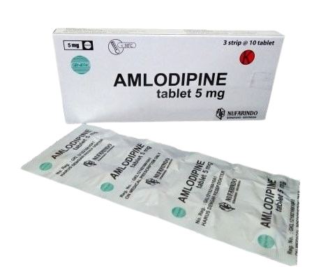
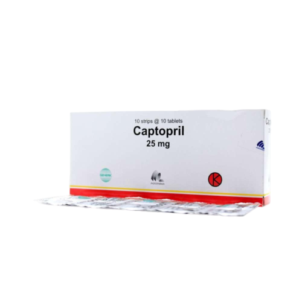
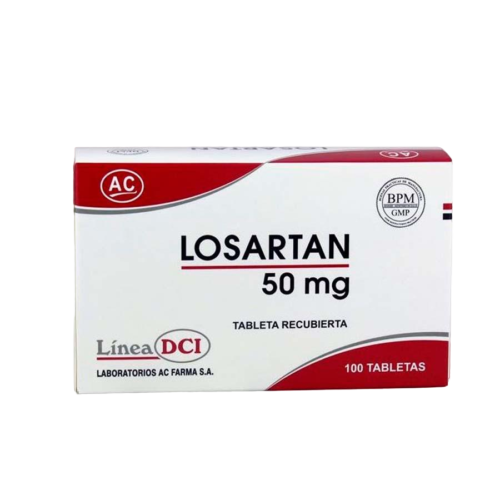
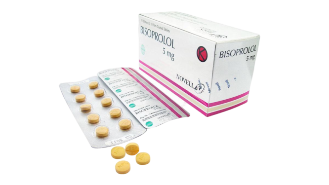
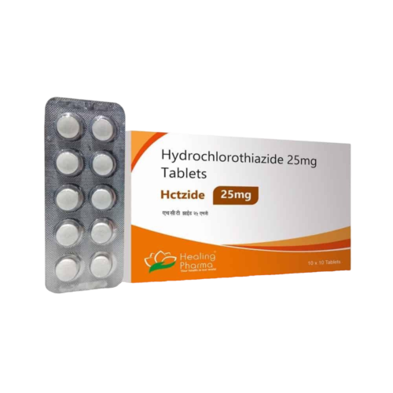

Apa itu Obat Farmokologis?
Obat farmokologis adalah senyawa kimia yang digunakan untuk mencegah, mengobati, atau mendiagnosis penyakit. Obat-obatan ini bekerja dengan berinteraksi secara spesifik dengan target molekuler dalam tubuh, seperti reseptor, enzim, atau saluran ion. Setiap obat memiliki mekanisme kerja yang unik dan harus digunakan sesuai dengan petunjuk dokter untuk memastikan keamanan dan efektivitas pengobatan.

Amlodipine 5 mg
Calcium Channel Blocker (CCB)
Manfaat
Mengendurkan dan melebarkan pembuluh darah, sehingga tekanan darah menurun.
Anjuran Minum
- 1 kali sehari, 1 tablet
- Sebaiknya dikonsumsi pada waktu yang sama setiap hari
- Bisa diminum sebelum atau sesudah makan

Captopril 25 mg
ACE Inhibitor
Manfaat
Menurunkan tekanan darah dan melindungi jantung serta ginjal.
Anjuran Minum
- 2–3 kali sehari, 1 tablet
- Diminum 30–60 menit sebelum makan
- Harus diminum secara teratur agar efektif

Losartan 50 mg
Angiotensin II Receptor Blocker (ARB)
Manfaat
Menurunkan tekanan darah, memperbaiki aliran darah, dan menjaga fungsi ginjal.
Anjuran Minum
- 1 kali sehari, 1 tablet
- Bisa diminum sebelum atau sesudah makan

Bisoprolol 5 mg
Beta Blocker
Manfaat
Menurunkan detak jantung dan tekanan darah, mencegah komplikasi jantung.
Anjuran Minum
- 1 kali sehari, 1 tablet di pagi hari
- Diminum secara teratur dan jangan dihentikan mendadak

Hydrochlorothiazide 25 mg
Diuretik (peluruh cairan)
Manfaat
Membantu mengurangi volume cairan tubuh dan menurunkan tekanan darah.
Anjuran Minum
- 1 kali sehari, 1 tablet di pagi hari
- Hindari minum di malam hari untuk mencegah sering buang air kecil saat tidur